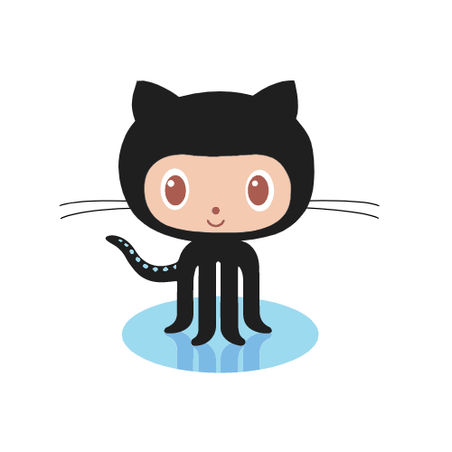

<ion-content [fullscreen]="true" color="tertiary">
  <div id="container" class="d-flex flex-column p-5">
    <strong class="mb-5 text-center welcome home-text animate__animated animate__backInDown">Welcome!</strong>
    <p class="home-text">This application shows the commit history of this same project.</p>
    
    <button class="btn btn-lg btn custom-button animate__animated animate__fadeInUp" [routerLink]="['/main']">Start!</button>
  </div>
</ion-content>

